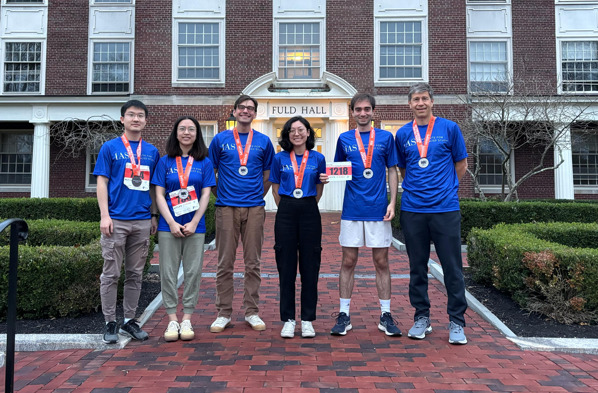
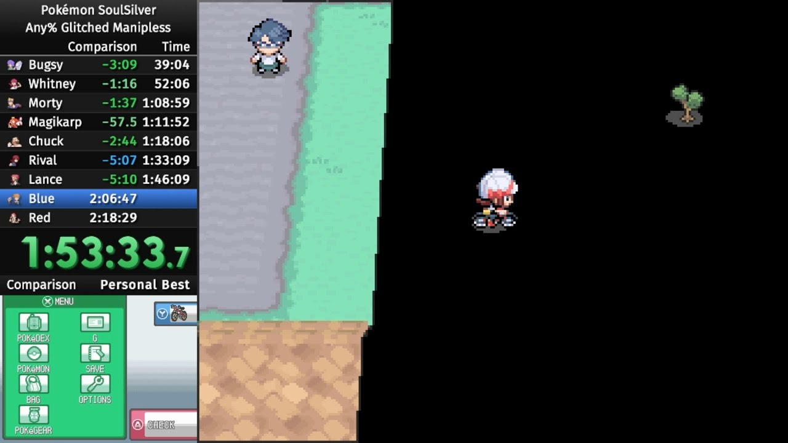
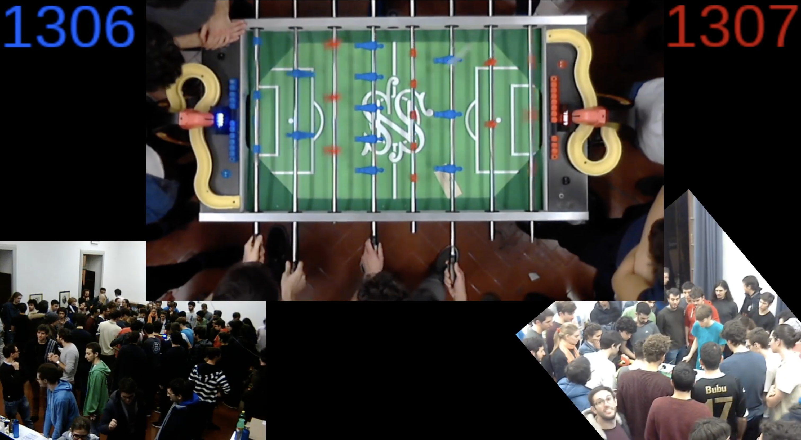

Here are some of the things I do that are not directly related to science.
Outdoor activities

Hiking
I really love exploring natural areas! These include mountains, islands, volcanoes, National Parks, as well as more niche locations.
Some of my most recent trips include:
- Big Island in Hawaiʻi, in August 2025;
- Mt. Rainier, Mt. St. Helens and Hanford site, in November 2024;
- The Canadian Rockies (Banff, Yoho, Jasper) and Vancouver Island, in August 2024;
- Sydney, the Blue Mountains and Kangaroo Island, in November and December 2023.

Running
After moving to Princeton in September 2024, I became a runner! My colleagues astrophysicists convinced me to join the 2024 Princeton Half Marathon. It was such a fun experience that it inspired me to continue training and racing more.
I continued running during the year, taking part in a few more races, such as the Princeton Turkey Trot, the IAS Woods Winter Wonder Run, and the legendary Fred Almgren Memorial "Mayday" Relay Race. Preparing for my second Princeton Half Marathon marked the step towards being a bit more serious and consistent at training and racing.
Read more about my running journey and race results!
Nerdy things

Pokémon videogames
The main series Pokémon games have been one of my lifelong companions. From 2020 onwards, most of my activity has revolved around speedrunning the games, which I sometimes stream on my Twitch channel (although I haven't really done much from September 2024 onwards...). Videos of my completed speedruns are available on YouTube, while a complete list of personal bests can be found on my SRC profile and on this spreadsheet. I have showcased speedruns of Diamond/Pearl, Platinum and HeartGold/SoulSilver at three editions of GUF (an Italian speedrun marathon) and two editions of BSG (an international speedrun marathon held in the Netherlands).
I particularly like the strategical aspect of Pokémon speedruns, including routing and research on the game mechanics. My favorite categories are the gen 4 glitched ones, with or without RNG manipulation. However, my best times are in Battle Frontier-related categories: in particular, I am a specialist of the Battle Factory. Before starting speedrunning, I have also extensively played Pokémon competitive battling.

Table football at Scuola Normale Superiore
Among the countless traditions at Scuola Normale Superiore, one of my favorites is an annual 24-hour-long table football match: mathematicians vs physicists. I have trained and played a lot with the goal of defeating the mathematicians, not always with the best results...
The table football on which the match is held is called "Subotto" and is a really special one. I researched its historical origins, from its arrival to Normale in 2003, passing through all its technological additions and customizations, and up to recent times. The findings are summarized in a document, and additional material is available here.
More outreach
A Choice 4 Life
I am involved in a A Choice 4 Life, a project led by Giulio Deangeli that aims at providing high school students with enough information about university and jobs to make a conscious choice about their future. I have contributed to the 2021, 2022 and 2023 editions. In 2024, the project became a book, La facoltà di scegliere, to which I contributed with a short piece describing how I chose my path to university and beyond.